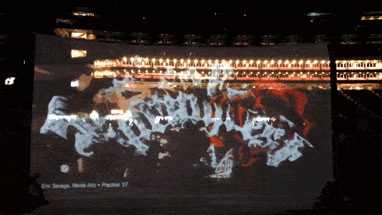
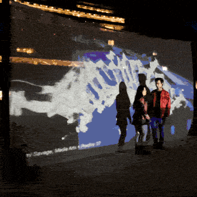

USC Springfest is the largest annual concert organized by USC Concerts Commitee.
USC Springfest 2025 welcomed artists Don Toliver and Lyn Lapid.
I collaborated with USC Concerts' Experience Committee to create visualizer projections for the venue.
I built my visualizer in TouchDesigner and After Effects using archival footage and 3D assets.
Full visualizer available on my Instagram.

